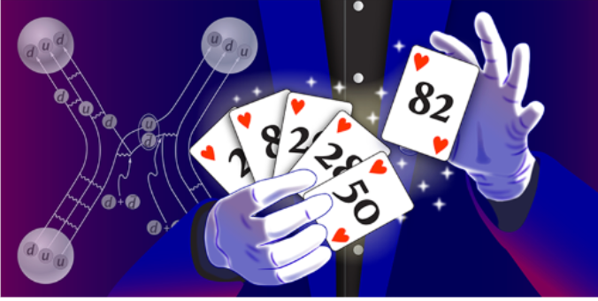

<!DOCTYPE html>
<html lang="en">
<style>
  :root {
    --text: #4d4d4d;
    --heading: #333333;
    --accent: #0d8fc4;
    --border: #e3e3e3;
    --card-bg: #ffffff;
    --page-bg: #ffffff;
  }

  * {
    box-sizing: border-box;
  }

  body {
    margin: 0;
    background: var(--page-bg);
    color: var(--text);
    font-family: "Helvetica Neue", Arial, sans-serif;
    line-height: 1.55;
  }

  .grid {
    display: grid;
    grid-template-columns: repeat(2, minmax(0, 1fr));
    gap: 62px;
    align-items: stretch;
  }

  .wrap {
    width: min(1940px, calc(100% - 72px));
    margin: 20px auto 40px;
  }
  .card {
    border: 2px solid var(--border);
    border-radius: 8px;
    background: var(--card-bg);
    padding: 38px 38px 42px;
    min-height: 720px;
  }
  .feature-row {
    display: grid;
    grid-template-columns: 290px 1fr;
    gap: 34px;
    align-items: start;
  }
  .feature-image {
    width: 100%;
    max-width: 290px;
    border-radius: 22px;
    box-shadow: 0 6px 16px rgba(0,0,0,.18);
    display: block;
  }

  .summary {
    margin: -4px 0 12px;
    font-size: clamp(21px, 1.6vw, 29px);
    line-height: 1.48;
    color: #505050;
    font-weight: 400;
  }

  .authors {
    margin: 25px 0 24px;
    font-size: clamp(19px, 1.45vw, 26px);
    line-height: 1.6;
    font-style: italic;
    color: #555;
  }

  .paper-link {
    display: inline-block;
    margin-top: 6px;
    font-size: clamp(20px, 1.45vw, 27px);
    font-weight: 800;
  }

<head>
    <meta charset="UTF-8">
    <meta http-equiv="X-UA-Compatible" content="IE=edge">
    <meta name="viewport" content="width=device-width, initial-scale=1.0">
    <title>Research Topics</title>
    <link rel="icon" href="/base/logo/favicon.ico">

    <link rel="stylesheet" href="/fa/css/all.css">
    <link rel="stylesheet" href="/css/highlights.css">

    <script type="text/javascript"src="https://code.jquery.com/jquery-1.4.1.min.js"></script>
    <script>
        $(function(){
            $("header").load("/base/header.html");
            $("nav").load("/base/nav.html");
            $("footer").load("/base/footer.html");
        });
    </script>

</head>

<body>
    <header></header>
    <nav></nav>

  <main class="wrap">
    <h1>Group highlights</h1>

    <section class="grid" aria-label="Group highlights">


      
      <article class="card">
        <h2>Exposing Nuclear Magic</h2>

        <div class="feature-row">
          

          <p class="summary">
            Calculations show how the mysterious magic numbers that stabilize nuclear structures emerge naturally from nuclear forces?
           Once these are described with appropriate spatial resolution.
          </p>
        </div>

        <p class="authors">
          C. R. Ding et al., Phys. Rev. Lett. 136, 052501 (2026) 
        </p>

        <a class="paper-link" href="paper">https://doi.org/10.1103/8lzc-j1lx</a>
      </article>


    </section>
  </main>

    <footer></footer>
    

</body>
